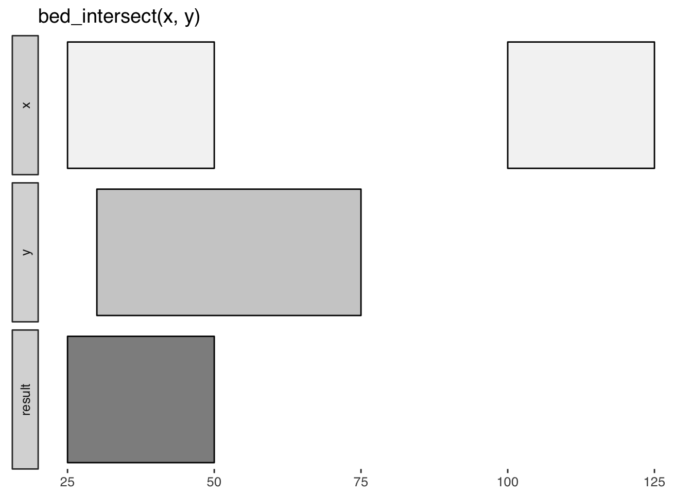

valr provides tools to read and manipulate genome intervals and signals, similar to the BEDtools suite. valr enables analysis in the R/RStudio environment, leveraging modern R tools in the tidyverse for a terse, expressive syntax. Compute-intensive algorithms are implemented in Rcpp/C++, and many methods take advantage of the speed and grouping capability provided by dplyr.
Installation
The latest stable version can be installed from CRAN:
install.packages('valr')The latest development version can be installed from github:
# install.packages("devtools")
devtools::install_github('rnabioco/valr')
Why valr?
Why another tool set for interval manipulations? Based on our experience teaching genome analysis, we were motivated to develop interval arithmetic software that faciliates genome analysis in a single environment (RStudio), eliminating the need to master both command-line and exploratory analysis tools.
Note: valr can currently be used for analysis of pre-processed data in BED and related formats. We plan to support BAM and VCF files soon via tabix indexes.
Familiar tools, all within R
The functions in valr have similar names to their BEDtools counterparts, and so will be familiar to users coming from the BEDtools suite. Similar to pybedtools, valr has a terse syntax:
library(valr)
library(dplyr)
snps <- read_bed(valr_example('hg19.snps147.chr22.bed.gz'), n_fields = 6)
genes <- read_bed(valr_example('genes.hg19.chr22.bed.gz'), n_fields = 6)
# find snps in intergenic regions
intergenic <- bed_subtract(snps, genes)
# find distance from intergenic snps to nearest gene
nearby <- bed_closest(intergenic, genes)
nearby %>%
select(starts_with('name'), .overlap, .dist) %>%
filter(abs(.dist) < 5000)Visual documentation
valr includes helpful glyphs to illustrate the results of specific operations, similar to those found in the BEDtools documentation. For example, bed_glyph() illustrates the result of intersecting x and y intervals with bed_intersect():

Reproducible reports
valr can be used in RMarkdown documents to generate reproducible work-flows for data processing. Because computations in valr are fast, it can be for exploratory analysis with RMarkdown, and for interactive analysis using shiny.
Remote databases
Remote databases can be accessed with db_ucsc() (to access the UCSC Browser) and db_ensembl() (to access Ensembl databases).
# access the `refGene` tbl on the `hg38` assembly
ucsc <- db_ucsc('hg38')
tbl(ucsc, 'refGene')API
Function names are similar to their their BEDtools counterparts, with some additions.
Data types
-
tbl_interval()andtbl_genome()wrap tibbles and enforce strict column naming.trbl_interval()andtrbl_genome()are constructors that taketibble::tribble()formatting.
Reading data
BED and related files are read with
read_bed(),read_bed12(),read_bedgraph(),read_narrowpeak()andread_broadpeak().Genome files containing chromosome name and size information are loaded with
read_genome().VCF files are loaded with
read_vcf().Remote databases can be accessed with
db_ucsc()anddb_ensembl().
Transforming single interval sets
Interval coordinates are adjusted with
bed_slop()andbed_shift(), and new flanking intervals are created withbed_flank().Nearby intervals are combined with
bed_merge()and identified (but not merged) withbed_cluster().Intervals not covered by a query are created with
bed_complement().Intervals can be ordered with
dplyr::arrange().
Comparing multiple interval sets
Find overlaps between two sets of intervals with
bed_intersect().Apply functions to selected columns for overlapping intervals with
bed_map().Remove intervals based on overlaps between two files with
bed_subtract().Find overlapping intervals within a window with
bed_window().Find the closest intervals independent of overlaps with
bed_closest().
Randomizing intervals
Generate random intervals from an input genome with
bed_random().Shuffle the coordinates of input intervals with
bed_shuffle().Random sampling of input intervals is done with the
sample_function family indplyr.
Interval statistics
Calculate significance of overlaps between two sets of intervals with
bed_fisher()andbed_projection().Quantify relative and absolute distances between sets of intervals with
bed_reldist()andbed_absdist().Quantify extent of overlap between two sets of intervals with
bed_jaccard().
Utilities
Create features from BED12 files with
create_introns(),create_utrs5(), andcreate_utrs3().Visualize the actions of valr functions with
bed_glyph().Constrain intervals to a genome reference with
bound_intervals().Subdivide intervals with
bed_makewindows().Convert BED12 to BED6 format with
bed12_to_exons().Calculate spacing between intervals with
interval_spacing().Access remote databases with
db_ucsc()anddb_ensembl().